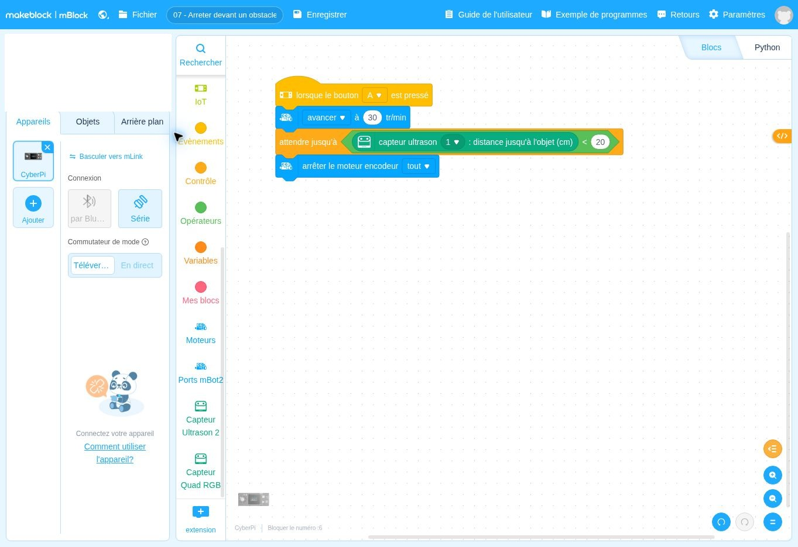

lorsque le bouton A ▾ est presséDépart
Ce que fait ce bloc : Bloc de départ : le programme se lance quand on appuie sur le bouton A du CyberPi, comme dans les fiches précédentes.
Pourquoi il est là : Vous choisissez le moment du départ.
À partir de quelle mesure faut-il décider d’arrêter le robot ?
Quand vous appuyez sur A, le robot avance tout droit. Dès qu’il détecte un obstacle à moins de 20 cm devant lui, il s’arrête.
Un programme mBlock est un empilement de blocs, à lire de haut en bas. Chaque bloc a une couleur qui indique son rôle. Voici chaque bloc de cette fiche, dans l’ordre, expliqué simplement.
DépartContrôleAction du robotInformationÉcranMémoireCalcul
Les couleurs ci-dessous sont proches de celles de mBlock. Les blocs sont redessinés ici pour être lisibles ; la vraie capture d’écran est plus bas.
Ce que fait ce bloc : Bloc de départ : le programme se lance quand on appuie sur le bouton A du CyberPi, comme dans les fiches précédentes.
Pourquoi il est là : Vous choisissez le moment du départ.
Ce que fait ce bloc : Lance les deux roues à la vitesse de 30 tours par minute, vers l’avant. Le robot roule, puis le programme passe tout de suite au bloc suivant.
Pourquoi il est là : Contrairement à « avancer 50 cm », ce bloc n’a ni durée ni distance : il ne s’arrête pas tout seul.
Mot à connaître. « tr/min » = tours par minute : c’est une vitesse de rotation des roues. Plus le nombre est grand, plus le robot va vite.
À savoir. Le robot continue de rouler pendant que le programme attend (bloc suivant) : le moteur ne s’arrête pas de lui-même.
Ce que fait ce bloc : Met le programme en pause tant que la distance mesurée est supérieure ou égale à 20 cm. Dès qu’elle devient inférieure à 20 cm, le programme continue.
Pourquoi il est là : C’est la surveillance de l’obstacle : le robot roule, et le programme guette le moment où l’objet devient trop proche.
Dans ce bloc, il y a :
Mot à connaître. Un « seuil » est la valeur limite qui fait changer de comportement (ici 20 cm).
Ce que fait ce bloc : Coupe les deux moteurs : le robot s’arrête.
Pourquoi il est là : Il faut l’arrêter explicitement, car « avancer à 30 tr/min » ne s’arrête jamais seul. Ce bloc est exécuté seulement quand l’attente est terminée, donc quand l’obstacle est proche.
Mot à connaître. « moteur encodeur » = les deux moteurs du mBot2, qui savent compter leurs tours. « tout » = les deux à la fois.
C’est exactement ce que fait le programme, écrit avec des phrases. Les lignes décalées vers la droite sont à l’intérieur d’une répétition ou d’un choix.
Quand j’appuie sur A : 1. je démarre en avant à 30 tr/min ; 2. j’attends que la distance mesurée devienne inférieure à 20 cm ; 3. j’arrête les moteurs.
Retrouvez dans cette capture les blocs expliqués ci-dessus. Vous pouvez aussi ouvrir le fichier dans mBlock pour le tester et le modifier.

Autres solutions : voir la page Dépannage. Ces fiches n’ont pas été testées avec un robot réel : vos observations peuvent différer légèrement.
Pour être sûr d’avoir compris, changez un seul élément, prévoyez le résultat, puis vérifiez avec le robot.